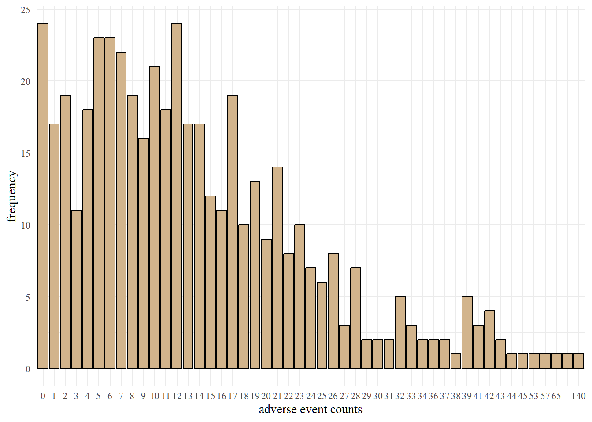
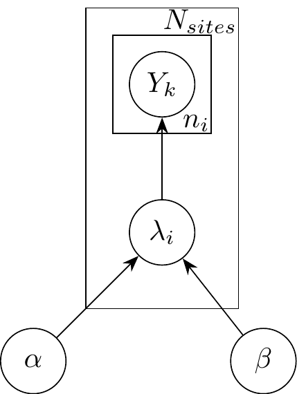
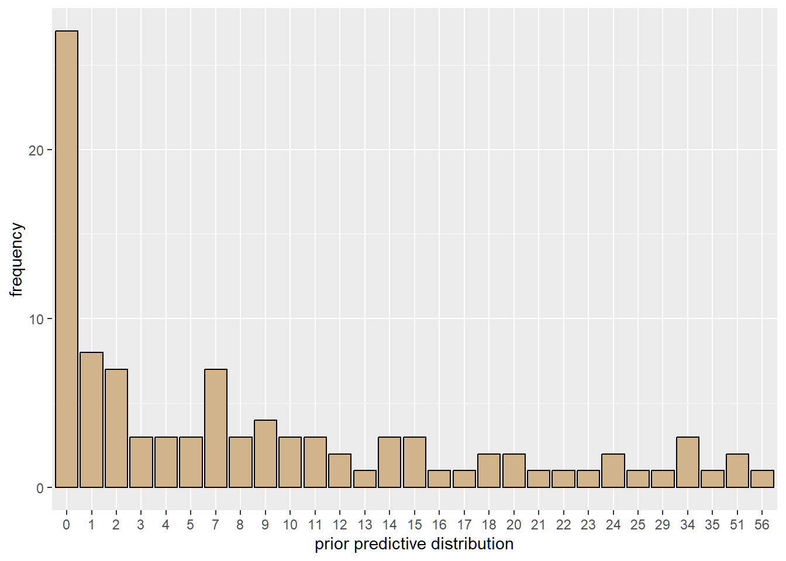
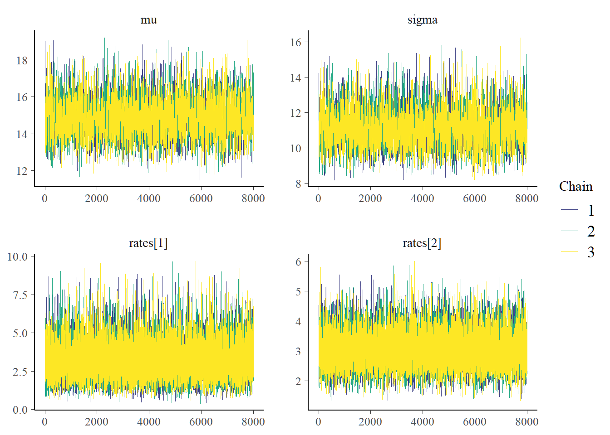
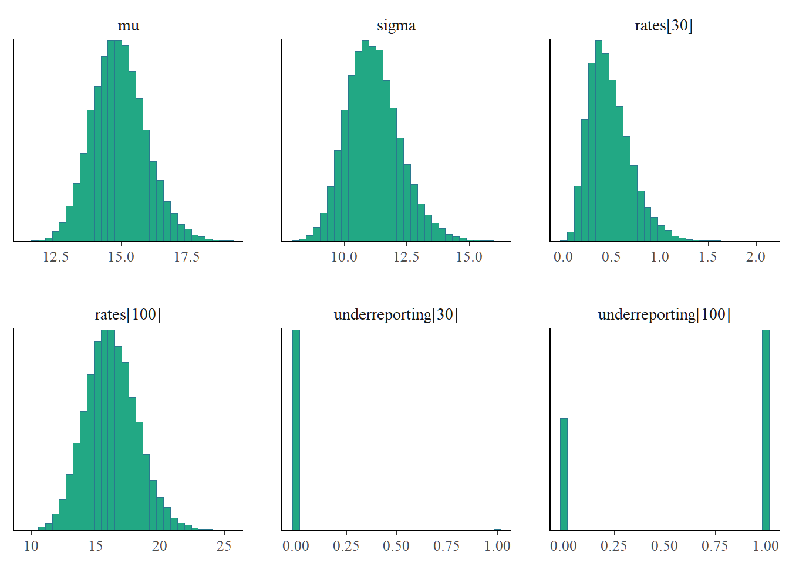
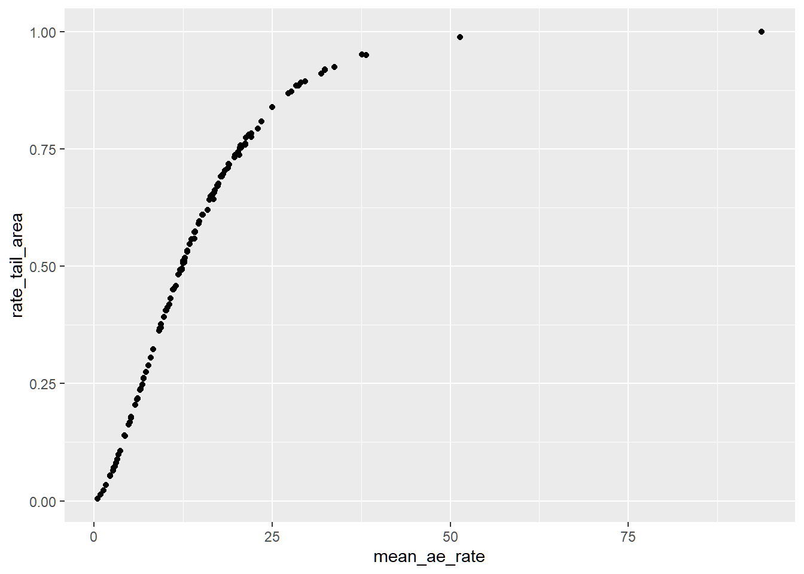
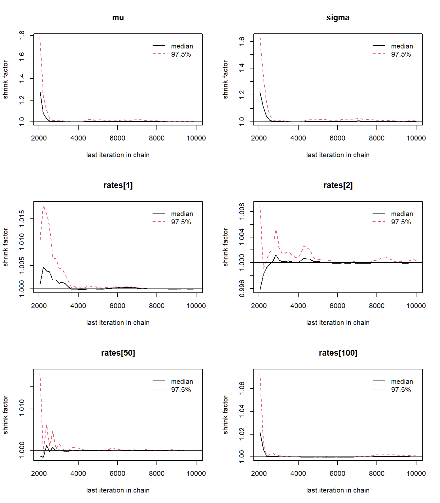
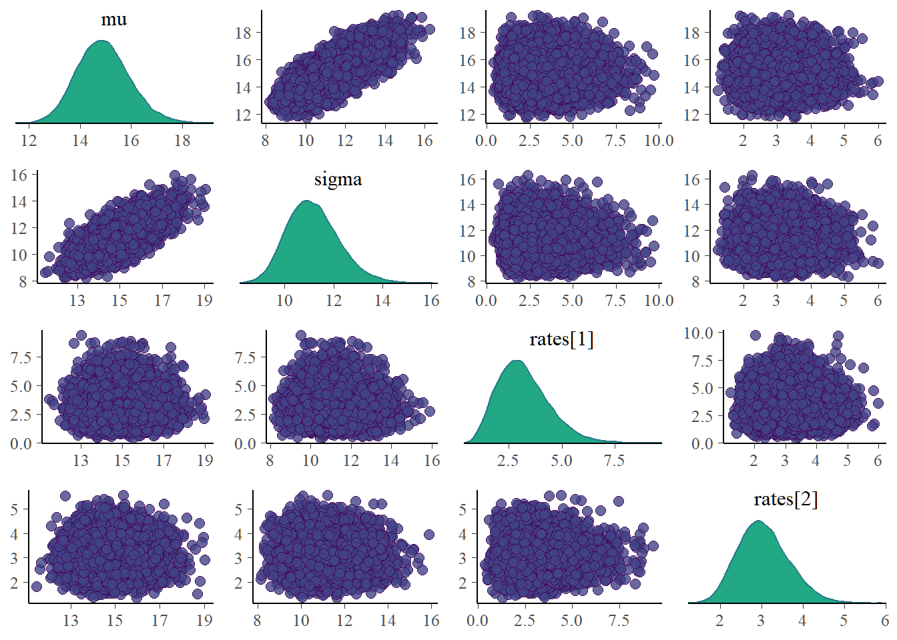
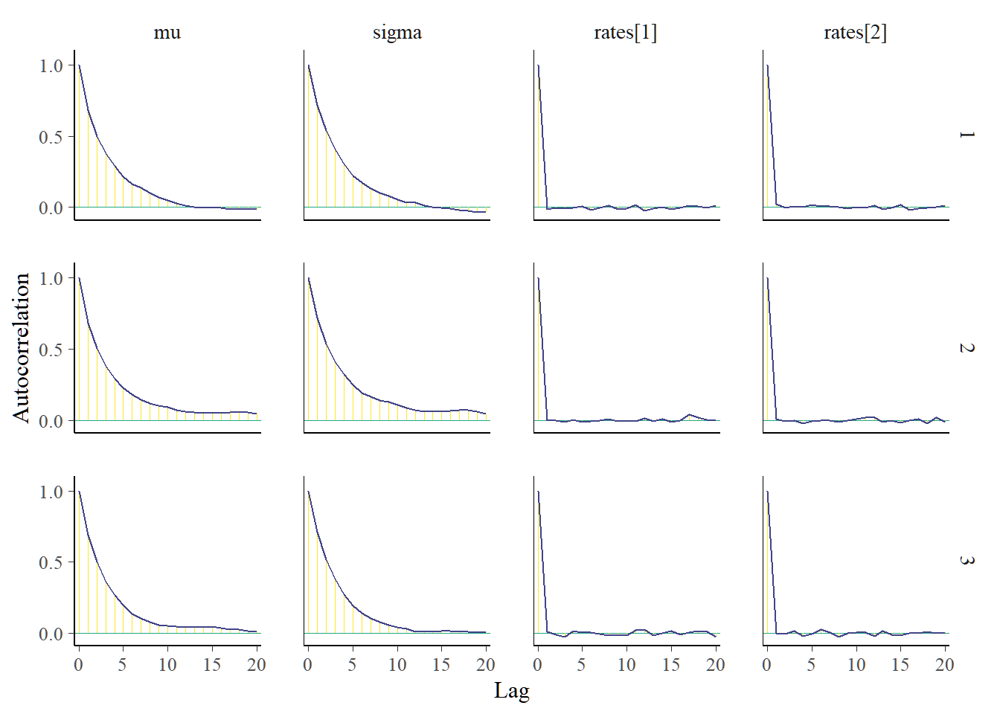

Code
################libraries################
library(tidyverse)
library(rjags)
library(bayesplot)
library(kableExtra)
library(MCMCvis)Count data underreporting is prevalent in many fields and clinical trial is no exception. According to Seruga et. al (2016) substantial evidence shows clinicians underreport harm in clinical trial. Underreporting can be in the form of non-representative of patient’s experience by clinicians or inaccurate reporting of detected adverse events.[1] underreporting poses risk to patient safety and data integrity.[2] Efforts have been made to model adverse events underreporting using Machine Learning framework[3] and Bayesian Methods.[2] Traditional site inspection for clinical trial is not feasible in the case of multiple sites. Modeling adverse safeguard patients’ safety. Data driven approach like we present here reduce the need for onsite visits and manual quality assurance activities.
This blog post is based on the original works of Yves Barmas and Menard Timothe and it is intended to provide a tutorial on how to model adverse events under Bayesian framework. The implementation in this blog is done in R.
The primary objective is to develop a robust method to assess the risk of AE underreporting from study sites[2]. Specifically, we use Bayesian hierarchical model to infer site reporting rates and the risk of underreporting. Bayesian models relies on the application of Bayes theorem: \[p(\boldsymbol{\theta}| \mathbf{x}) \propto l(\mathbf{x}\boldsymbol|{\theta})(\boldsymbol{\theta})\]
That is, we model the posterior as proportional to the likelihood and the prior distribution on \(\boldsymbol{\theta}\). We usually think of the posterior distribution as an update of the prior after incorporating the observed data. In the case of count data, the likelihood can be derived using a poisson or negative binomial distribution. Unlike a poisson process where the mean and variance are equal, a negative binomial allows for over-dispersion. The Bayesian approach is an improvement on machine learning approach for modeling adverse events underreporting.[3]
The data originates from the control arm of a Phase III, Randomized Double-Blind placebo-controlled study to access the efficacy and safety of 10mg Zibotetntan with Docetaxel in Metastics Hormone resistant Prostate Cancer.[4] The primary endpoint of the study was to compare overall survival of Zibotentan combined with docetaxel to docetaxel. The data can be found here.
The data includes study, site number, patient random identifier and adverse event count. There are 125 unique sites and 468 patients whose adverse event counts are recorded.
| site_number | aes_count | Number_of_patients |
|---|---|---|
| 3001 | (4,1) | 2 |
| 3002 | (2,1,5) | 8 |
| 3003 | (7,4) | 2 |
| 3004 | (3,27,8) | 3 |
| 3005 | (12,6) | 2 |
| 3006 | (2,4) | 2 |
| 3007 | (5) | 1 |
| 3008 | (11,4,16,31,23) | 6 |
We see the number of patients at each site and their corresponding reported adverse events.

We can observe from the plot that 24 patients experienced no adverse events.
The number of adverse event for a patient from the \(i^{th}\) site is modeled as Poisson hierarchy.[2] \[Y_{1}, Y_{2}, \dots, Y_{n_i} \sim Poisson(\lambda_{i})\] \(n_{i}\) denotes the number of patients at a specific site
\(\lambda_{i}, i = 1, 2, \dots, N_{sites}\) is drawn from a single study level gamma distribution, \(\Gamma(\mu_{study}, \sigma_{study})\) with \(exp(0.1)\) as vague hyperpriors on mean and standard deviation. This reparametrization gives a more direct interpretation of the posterior of \(\mu\) as the average reporting rate across sites and \(\sigma\) as the measure of variability in the reporting rate across sites.
The data is well represented in Figure 1.

The use of a hierarchical Poisson model requires prior justification for study mean and standard deviation. One can justify the choice of hyperpriors by considering the prior predictive distribution. Here, the prior predictive distribution for the choice of priors have similar range as the observed adverse event counts.
###################################################
################model description##################
###################################################
set.seed(2)
adv <- "
model{
for(i in 1:N){
y[i] ~ dpois(rates[site_idx[i]])
}
##### prior
for(j in 1:J){
rates[j] ~ dgamma(shape, rate)
}
###Hyperpriors on rate################
mu ~ dexp(0.1)
sigma ~ dexp(0.1)
#transformation to shape and rate of gamma
rate <- mu/sigma^2
shape <- mu^2/sigma^2
####a random rate is less than site's rate
reference_rate ~ dgamma(shape, rate)
for(j in 1:J){
underreporting[j] <- reference_rate < rates[j]
}
}
"
writeLines(adv, "adversevents.txt")To simulate the prior predictive distribution in Jags, use NAs for the data nodes. The prior predictive checks shows what data-sets would be consistent with the prior distribution. Recall that the priors used are vague.
#####################prior predictive################
#####################################################
set.seed(2)
missg <- list(
y = rep(NA, nrow(df)),
N = nrow(df),
J = length(unique(df$site_number)),
site_idx = as.numeric(factor(df$site_number))
)
ppd_model <- jags.model(
file = "adversevents.txt",
data = missg,
n.chains = 3,
quiet = TRUE
)
update(ppd_model, 1e3)
prior_pred <- coda.samples(
ppd_model,
variable.names = c("y"),
n.iter = 8e3
)
prior_pred <- as.vector(prior_pred[[1]]) #simulated y's into a vector
sample_prior_pred <- sample(prior_pred, 100) # sample a few to plot
tibble(prior_predictive = sample_prior_pred) |>
group_by(prior_predictive) |>
summarise(frequency = n()) |>
ggplot(aes(x = as.factor(prior_predictive), y = frequency)) +
geom_col(fill = "tan", color = "black") +
labs(x = "prior predictive distribution") +
guides(x = guide_axis(check.overlap = TRUE))
To quantify the risk of underreporting, we compute a left tail area probability defined as \[RTA_{i} = P(\hat{\lambda} < \hat{\lambda}_{i})\] We interpret this as posterior probability that a randomly selected reporting rate from the posterior distribution is below a site’s inferred reporting rate.
Run the MCMC algorithm with 1000 burn-in, 3 chains and 8000 samples for each chain.
##################Observed data###############################
data <- list(
y = df$ae_count_cumulative,
N = nrow(df),
J = length(unique(df$site_number)),
site_idx = as.numeric(factor(df$site_number))
)
model <- jags.model(
file = "adversevents.txt",
data = data,
n.chains = 3,
quiet = TRUE
)
update(model, 1e3)
############posterior distribution############################
samples <- coda.samples(
model,
variable.names = c("mu", "sigma", "rates", "underreporting"),
n.iter = 8e3
)Before making inference from the results of MCMC algorithms, we need to check the quality of the generated sample. MCMC diagnostics tool helps us to determine whether generated posterior distribution represents an accurate approximation of the target posterior.

We see a “good” mixing in the chains. That is, the plots of the individual chains merge. Well-behaved chains results in a smooth histogram(density) of the posterior distribution.

The MCMC diagnostics reveal no issues so we can go ahead with inference. Notice that site 3030 seems suspicious with low reporting compared to site 3100.
| mean | sd | 2.5% | 50% | 97.5% | Rhat | n.eff | |
|---|---|---|---|---|---|---|---|
| mu | 14.920735 | 1.0286098 | 13.035586 | 14.877861 | 17.097989 | 1 | 3824 |
| sigma | 11.170121 | 1.0650001 | 9.310969 | 11.089841 | 13.497666 | 1 | 3557 |
| rates[1] | 3.207421 | 1.2346538 | 1.247355 | 3.062353 | 6.008819 | 1 | 24397 |
| rates[2] | 3.050920 | 0.6119854 | 1.975422 | 3.009883 | 4.349681 | 1 | 23798 |
| rates[3] | 6.024035 | 1.6903317 | 3.181650 | 5.862378 | 9.758963 | 1 | 24247 |
The table above presents the posterior summaries of the study mean, study standard deviation and reporting rates. Also included are the 95% credible interval, median, Gelman Rubin statistic and the effective sample size. Larger values of SD suggests uncertainty about the estimate.
rate_tail_area <- MCMCsummary(samples, params = "underreporting")
rta_summary <- tibble(
site = unique(df$site_number),
mean_ae_rate = output[-c(1:2), ]$mean,
sd_ae_rate = output[-c(1:2), ]$sd,
rate_tail_area = rate_tail_area$mean,
aes_count = inputdf$aes_count
)
arrange(rta_summary, rate_tail_area) |>
head(8) |>
kable(caption = "Posterior summaries of AE rate and Rate tail area for each site")| site | mean_ae_rate | sd_ae_rate | rate_tail_area | aes_count |
|---|---|---|---|---|
| 3030 | 0.4782139 | 0.2184021 | 0.0040833 | (0,1,2) |
| 3036 | 0.9252746 | 0.4766602 | 0.0131250 | (0,1) |
| 3037 | 1.3290269 | 0.5088118 | 0.0225417 | (1,0,3) |
| 3046 | 1.6081075 | 1.2153123 | 0.0343333 | (0) |
| 3035 | 2.2651818 | 1.0387725 | 0.0532083 | (0,3) |
| 3032 | 2.2648224 | 1.0356649 | 0.0536667 | (3,0) |
| 3018 | 2.6216554 | 0.7929520 | 0.0649167 | (6,1,2,0) |
| 3039 | 2.7349991 | 1.1426613 | 0.0707500 | (3,1) |
This table shows the study sites of the top 8 lowest rate tail area. Site 3046 has a 0 reported adverse event yet the mean ae rate is thrice larger than the mean ae rate for site 3030, which can be attributed to the information sharing across study sites. The uncertainty around the estimate is quiet high compared to site 3030.
With a well-defined threshold, clinicians can flag sites with lower rate tail area. If we chose a 0.05 threshold then site 3030 could be flagged as potential site with underreporting; prompting clinicians to focus on this site.

This graph represents the empirical posterior predictive cumulative distribution. Lower expected adverse event rate is associated with lower reporting probability.
In the following steps we offer other due diligence checks for convergence of the MCMC algorithm

The Brook-s Gelman Rubin diagnostic plots should approach one, which is what we see in the plots above. The Gelman plots often requires at least two chains.

Bivariate plots for each pair of parameters need to be examined as it is possible for parameters to be dependent a posteriori even for priors taken to be independent. Dependent posterior can lead to problematic inference. The mean and sigma posterior are correlated(Not too surprising since we know the mean and variance of a poisson to be equal). Our inference makes no use of marginal posterior of \(\mu\) and \(\sigma\). The posterior site rates which are used for inference in this reported are clearly uncorrelated.

Autocorrelation plots of interested parameters should decrease rapidly. Here, the reporting rates have a quick decline in autocorrelation.
In this post, we reproduced the work of Yves Barmaz and Timothé Ménard. Bayesian modeling of adverse event counts have been used to quantify the risk of AE underreporting. Sites with potential AEs underreporting can be flagged for onsite audits and thorough data verification.
The time structure associated with the the occurrence of the adverse events is ignored in this analysis. Covariates that can influence the occurrence of adverse events are also ignored. In situations where the site level data is overdispersed, the current implementation is inadequate. We may need to consider negative binomial in place of the poisson model.
This post was born out of a requirement to reproduce and present a published article in our Bayesian Theory class.
A special thank you to Barmaz Y and Ménard T for the permission to reproduce their paper.